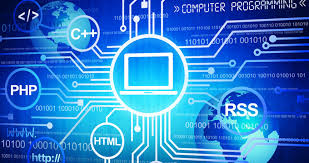
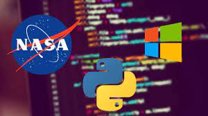

La programación es fundamental para acrecentar el avance tecnológico dentro de las industrias que para llevar a cabo sus funciones necesitan de sitios y aplicaciones creadas a partir de los códigos. No es novedad que vivimos en un mundo computarizado donde la tecnología forma parte de todo lo que hacemos
-
Ademas 6 lenguajes más utilizados en el desarrollo web
HTML.
CSS.
JavaScript.
PHP.
Java.
Python.
Te podria interesar acompañanos en esta aventura tecnologica!!
-
Permite la creación de sitios dinámicos en Internet. Esto se consigue generando los contenidos del sitio a través de una base de datos
mediante lenguajes de programación Web. Dominando la programación Web podremos crear sitios dinámicos como periódicos digitales o tiendas virtuales

